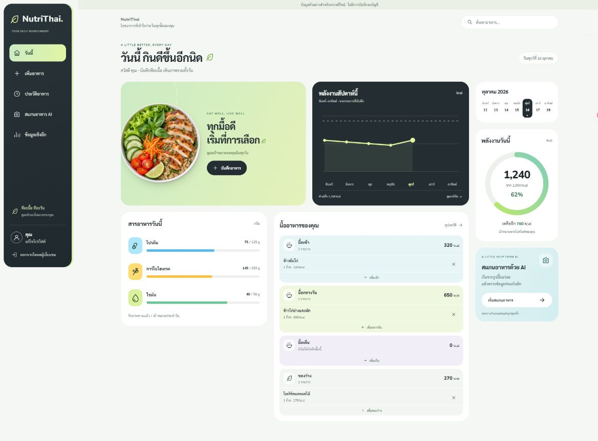

บันทึกอาหาร
เลือกอาหารและปริมาณที่กิน จัดรายการเป็นมื้อ และดูสารอาหารในแต่ละวัน
WEB DEVELOPMENT PROJECT / 2026
รู้จัก NutriThai โปรเจกต์เว็บแอปติดตามโภชนาการ
ที่เปลี่ยนบันทึกอาหารให้เป็นภาพรวมที่เข้าใจง่าย
ออกแบบเพื่ออาหารไทย · พัฒนาด้วย React และ FastAPI
บันทึกง่ายอาหารและปริมาณ
เห็นภาพรวมพลังงานและสารอาหาร
จากไอเดีย สู่โค้ด และเว็บไซต์ที่เผยแพร่อัตโนมัติ
THE PERSON BEHIND THE PROJECT
รหัสนิสิต 67160345
โปรเจกต์ NutriThai เป็นผลงานพัฒนาเว็บแอปสำหรับบันทึกอาหารไทย ติดตามพลังงานและสารอาหาร พร้อมแสดงข้อมูลย้อนหลัง เพื่อให้ผู้ใช้เห็นพฤติกรรมการกินของตนเองได้ชัดเจนขึ้น
หน้านี้จัดทำสำหรับแลป GitHub Actions + GitHub Pages โดยใช้ HTML, CSS และ JavaScript และเผยแพร่ผ่าน Workflow อัตโนมัติ
DESIGNED FOR EVERYDAY LIFE
เลือกอาหารและปริมาณที่กิน จัดรายการเป็นมื้อ และดูสารอาหารในแต่ละวัน
ดูประวัติอาหาร ข้อมูลเชิงลึก และแนวโน้มน้ำหนักในช่วงเวลาที่เลือก
วิเคราะห์ภาพอาหารผ่าน Gemini และตรวจสอบผลก่อนบันทึกในแอป

หน้านี้เป็นเว็บไซต์แนะนำผลงานแบบ Static ส่วนการเข้าสู่ระบบ บันทึกอาหาร และสแกน AI ของแอปเต็ม ต้องใช้งานร่วมกับเซิร์ฟเวอร์ FastAPI ที่ติดตั้งแยกต่างหาก
TOOLS BEHIND THE EXPERIENCE
เทคโนโลยีที่ใช้ในโปรเจกต์นี้
HTML · CSS · JavaScript
React · TypeScript · Vite · Tailwind CSS
Python · FastAPI
Supabase · PostgreSQL · Gemini API
Git · GitHub
GitHub Actions · GitHub Pages
ลองกดปุ่มทักทายด้านล่างได้เลย